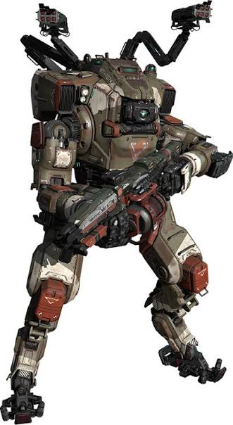
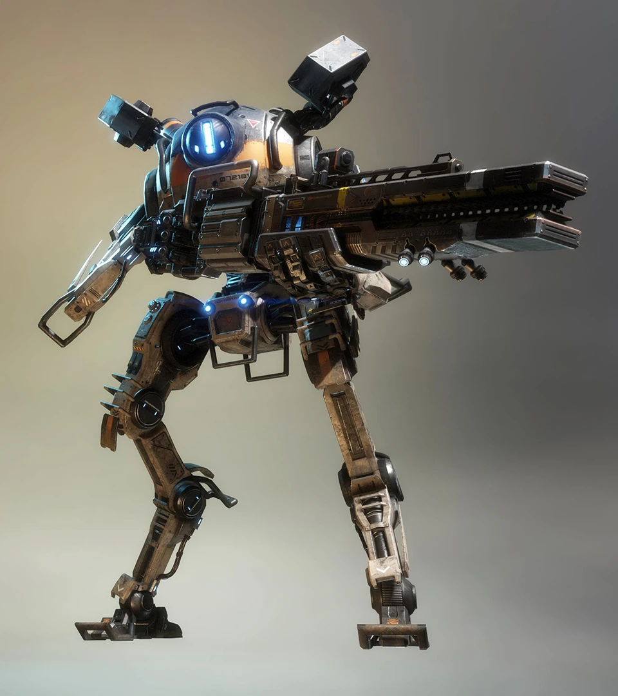
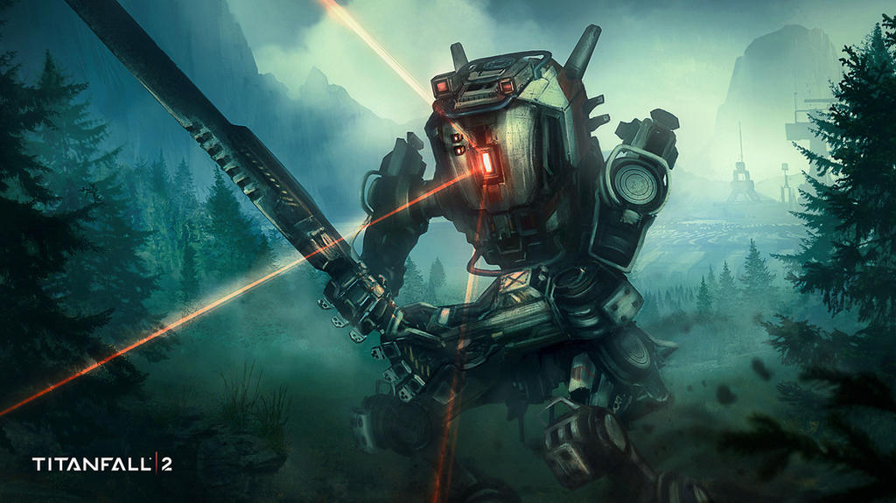
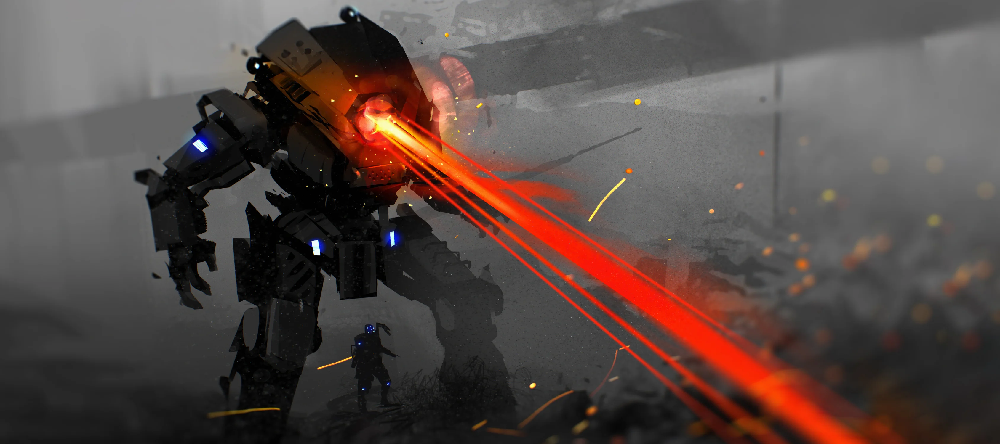

Self explanatory, he is just the GOAT

My favorite titan to play, easily beats any other titan if you play distance and utilize tether traps. Plus cluster missile is very versitile.

Very maneuverable and good at close range, plus can easily escape dangerous situations with phase shift. Also has a giant sword which is cool.

Very fun and easy titan to play, thermal shield is really good. Also has a core that can destroy through doomed state if enemy titan health is low enough.

Though not the greatest in terms of firepower Ion is great at dealing with pilots and Titans with single shot/spam type weapons due to vortex shield.
